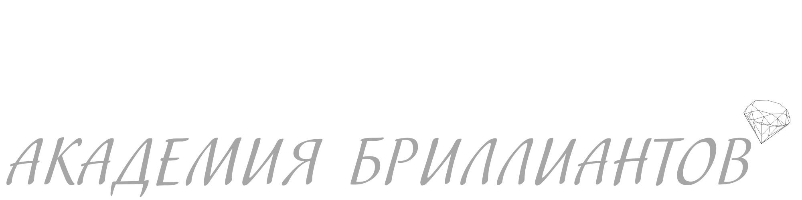
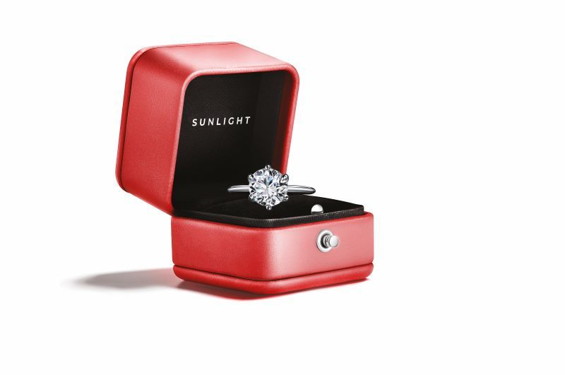
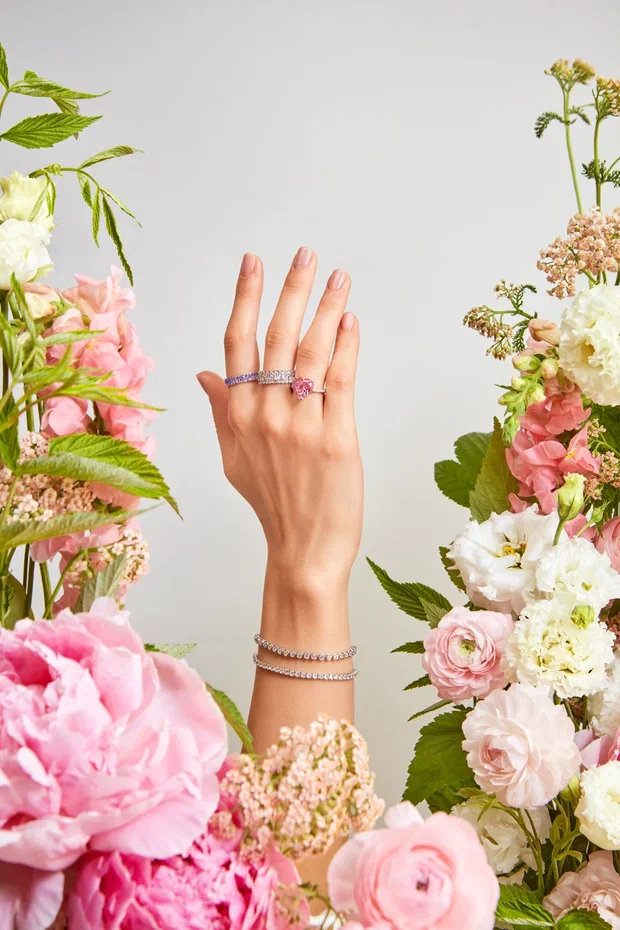
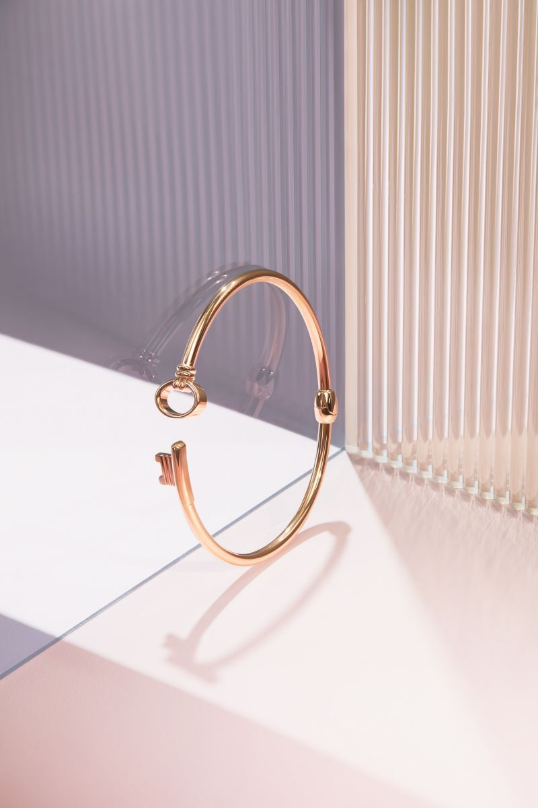
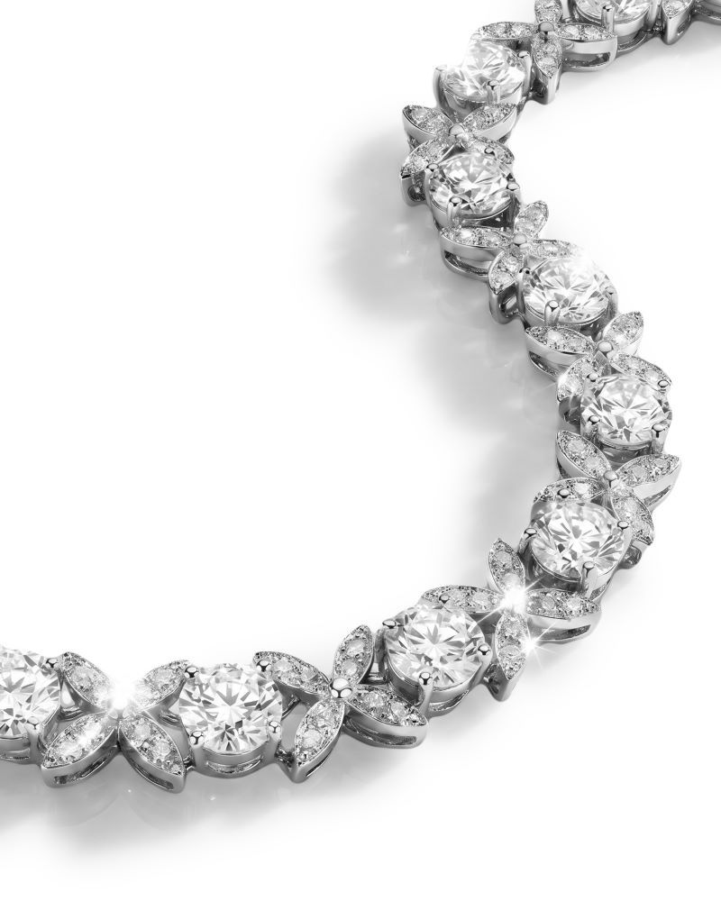
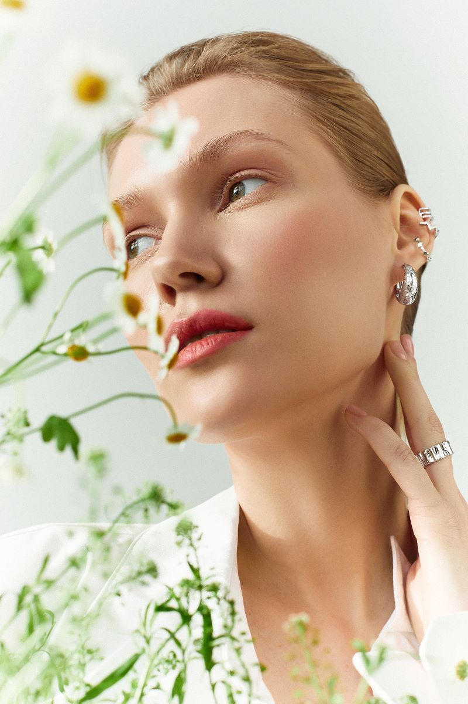
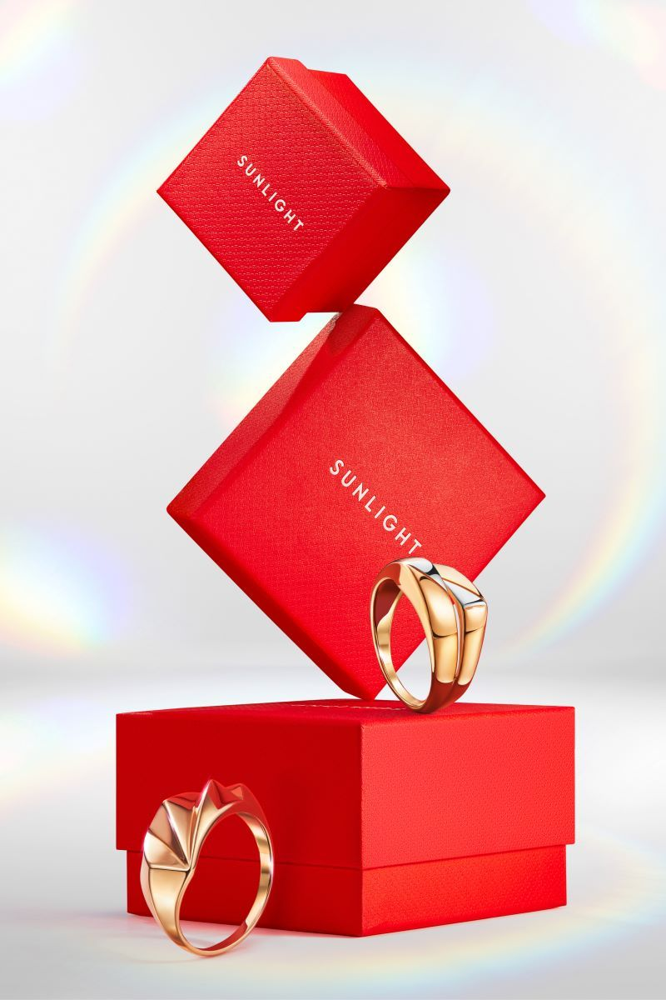
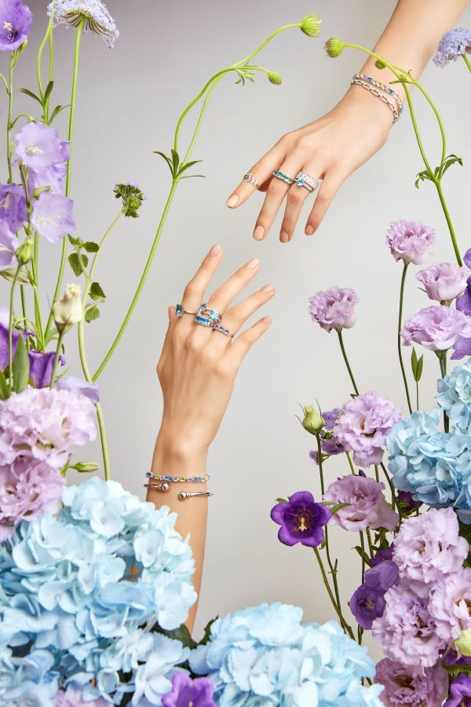
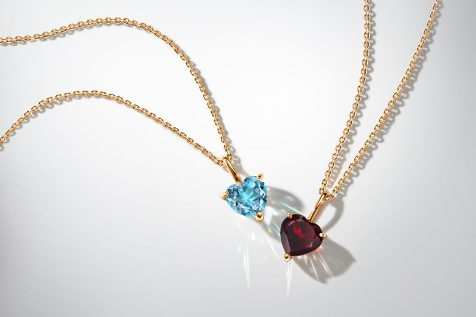
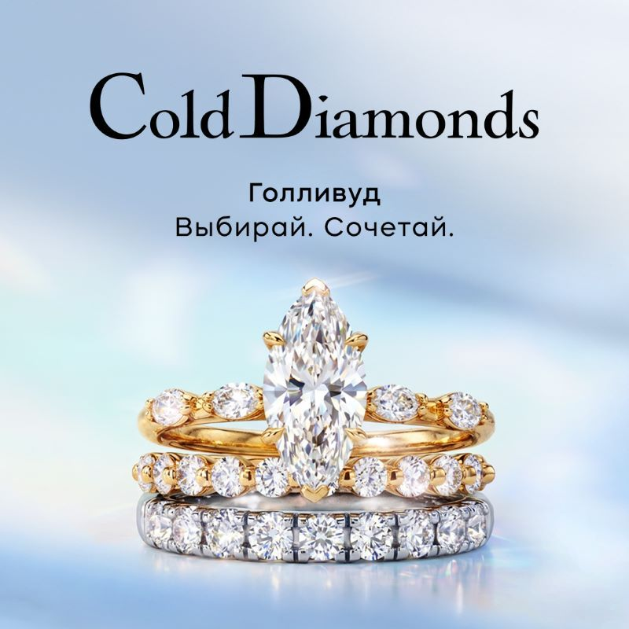

Самый дорогой камень в мире и другие ценные минералы
Какой камень дороже бриллианта, сколько на самом деле стоит самый дорогой драгоценный минерал в мире и какие самоцветы входят в элитный топ —...
Раздел журнала
Статьи Sunlight Wiki по теме «Драгоценности»: 20 материала с разбором деталей и практическими советами.
Какой камень дороже бриллианта, сколько на самом деле стоит самый дорогой драгоценный минерал в мире и какие самоцветы входят в элитный топ —...

В мире существуют ценные самоцветы, которые не входят в основной рейтинг, но при этом обладают уникальными свойствами и высокой инвестиционной ценностью

Вы когда‑нибудь задумывались, почему, глядя на витрину с украшениями, мы чаще всего ищем именно блеск бриллианта?

Что подарить мужчине, который уже имеет всё? Что можно подарить на день рождения человеку, для которого важны качество, статус и индивидуальность?...

Традиция получать ювелирные изделия исключительно в подарок постепенно уходит в прошлое

Вы когда-нибудь задумывались, почему мы носим символ обещания именно на безымянном пальце?

Сезон романтических историй и свадеб. Как сделать его ярче?

Одна из крупнейших ювелирных сетей SUNLIGHT вместе с ювелирным брендом «Академия Бриллиантов», представленным в сети эксклюзивно, запустила проект...

Вы когда-нибудь задумывались, почему нам кажется, что бриллианты — это атрибут исключительно для вечерних выходов в бархатных платьях или для...

Одна из крупнейших российских ювелирных сетей SUNLIGHT выяснила, каким было первое украшение россиян, кто его подарил и сохранили ли они его спустя годы

Китайская художница-ювелир Фэн Цзя превратила живопись Клода Моне в драгоценное искусство, создав украшения, в которых свет и цвет обрели объем

CHANEL представил новый рекламный фильм COCO MADEMOISELLE CRUSH ABSOLU с Грейси Абрамс, в котором ювелирные украшения становятся важной частью...

Вы в предвкушении первого свидания? Бабочки в животе, легкое волнение… Это нормально!

Почему мы так волнуемся перед свиданием?

Вы когда-нибудь задумывались, почему одни люди притягивают нас, словно магниты, а другие — даже при идеальной внешности — оставляют в душе лишь...

Вы чувствуете бабочки в животе? Сердце бьется чаще? Приближается первое свидание? Замечательно!

Первое свидание — это всегда движение по тонкому льду

Почему летом наши сердца бьются чуть чаще, а глаза ищут кого-то особенного даже в отражении витрин?

Хотите научиться видеть сквозь маски? Тогда давайте разберем код, который люди не могут подделать, даже если очень захотят

Коллекция «Голливуд» создана для женщин, которые не ждут особого случая, чтобы блистать